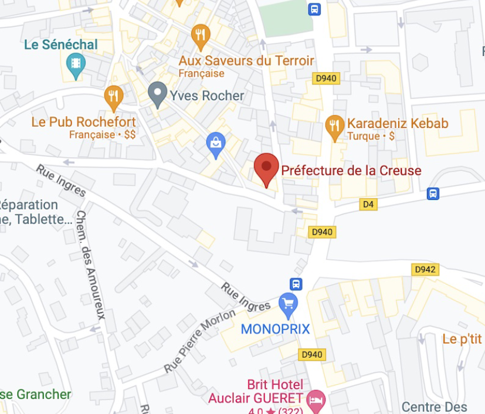

Présentation de mon alternance:
Le BTS Services Informatiques aux Organisations offre la possibilité
d’effectuer 2 stages en entreprise durant le cursus.
Ils peuvent être découpés en 2 stages de 5 semaines chacun (1 en
première année, et 1 en deuxième) ou alors être fait en 1 stage de
10 semaines consécutives. Cela dépend de l’établissement
proposant cette formation.
Le BTS Services Informatiques aux Organisations offre également
la possibilité de travailler en alternance les deux années.
Il est donc possible d’alterner entre 1 semaine de cours et une
semaine de travail.
MON ALTERNANCE
Alternance Préfecture de la Creuse
« Au sein du système d’information »
Du 01.09.2022 Au 30.06.2023
Mise en place d’un réseau WIFI au sein de la Préfecture
Maintenance/Installation postes informatiques
Assistance aux utilisateurs
Adresse:
Pl. Louis Lacrocq, 23000 Guéret
Type:
Bâtiment Administratif
Localisation:
Nouvelle-Aquitaine en Creuse
Téléphone:
05 55 51 59 00
Maintenance/Installation postes informatiques Assistance aux utilisateurs
